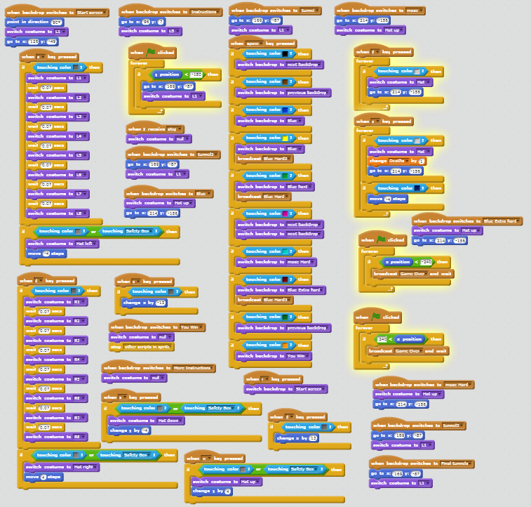

This is my Portfolio Page!


This is the scratch game that I created. It is called The Irresponsible Dad
The objective is to find your son by navigating through the mazes/puzzles.
---To preview the game please click on the image.


With MIT App Inventor I created little mini games or quizes for the kids to play and learn.
I used some not very known superheroes to give them recognition hence the name "learning with Superheroes"
---To preview the application that I have created for pre-schoolers
1) Click on the image to download the apk file
2) Transfer this file onto your android device (you will need to enable "unknown source" downloads for this to work)
3) Finally install this children's application

With python on repl.it I created a choose your own adventure type of game.
Where the objective is to try and survive the night and overcome the monster.
---To preview the game please click on the image.
With python on canopy I created a hangman game in a couple of days.
If you are not familiar with the game, the program selects a word and your goal is to guess the word
in under eight tries. I transfered the game over to repl.it so you can try the game if you like
---To preview the game please click on the image.

Once again using python on canopy, but this time I got a very young picture of myself and altered it.
I used the module matplotlib.pyplot to create these modification to this image of myself.
---The image to the left is before, the image to the right is after.
In canopy I created a GUI using python to make this quick project.
I used the module tkinter to create this program from what I learned on PLTW.
---The image is an example of the program running.
In canopy we created a graph using python to make this representation.
We used the module matplotlib to create this program.
---The image is an example of the program running.


With the Netlogo Web programming language I remixed an already existing simulation.
I did this to answer my question about How Fast Disease Spreads in Overpopulated locations.
I did this by simplifying the GUI and setting to more easily run the simulation I needed.
---The image on the left is the remix the one on the right is the original.